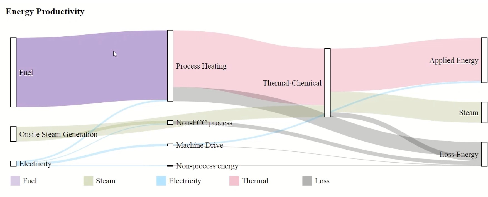

DOE funded project
August 2, 2021
Texas Tech Aims to Make Aircraft Production Process More Secure

The work is in collaboration with:
- Cybersecurity Manufacturing Innovation Institute, CyManII is a $111 million public-private partnership led by the University of Texas at San Antonio
- Delek is a diversified downstream energy company with assets in petroleum refining, logistics, asphalt, renewable fuels and convenience store retailing headquartered in Brentwood, Tennessee.
- Texas Tech University